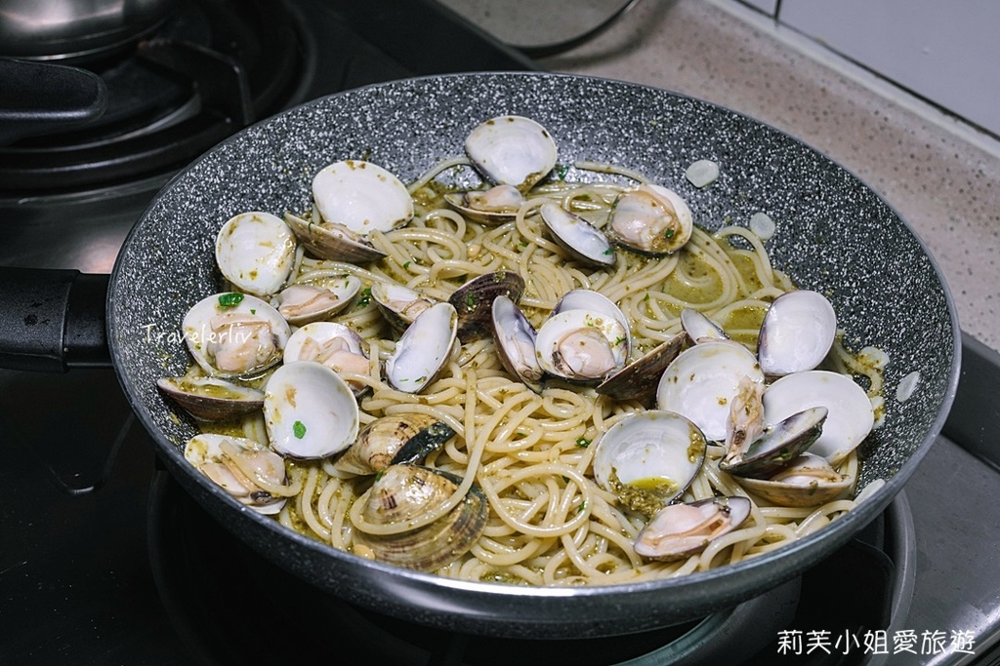

1. 事先將蛤蠣放在容器內，加入水跟鹽靜置。如果購買已經處理好的蛤蠣，可省略此步驟
2. 煮一鍋熱水，將義大利麵放入煮熟。
3. 將大蒜切片、巴西里剁碎、羅勒洗淨放在一旁備用。
4. 放入橄欖油跟蒜片炒香。
5. 把吐沙後的蛤蠣、白酒跟巴西裡放入鍋中，蓋上鍋蓋等待蛤蠣即將打開，立刻放入煮熟的義大利麵。
6. 加入鹽跟青醬拌勻後即可起鍋。
7. 接著準備擺盤，將義大利麵放置底下，在上層撲滿蛤蠣，最後再用新鮮羅勒跟現刨帕瑪森起司點綴，青醬蛤蠣義大利麵即完成。1

綜合美介紹 紅醬海鮮義大利麵 奶油培根義大利麵 煙花女義大利麵 學習心得
練習音樂與視頻